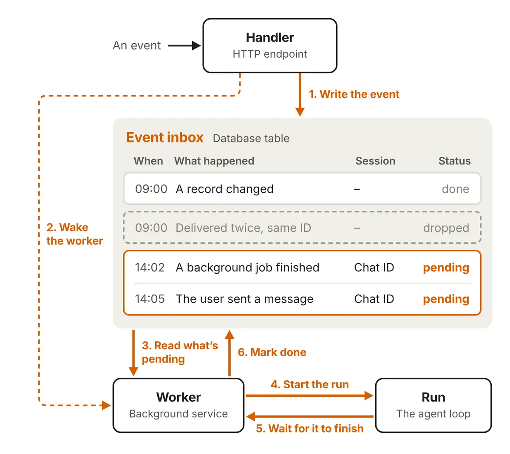
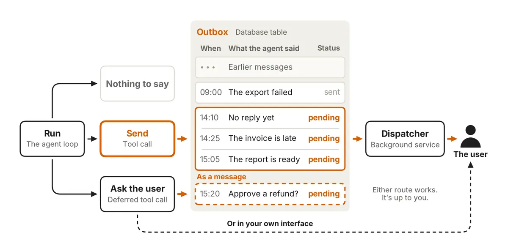

常駐代理：五個原語，撐起「睡著也在運作」的架構
導讀原文：Building always-on agents（Anthropic 官方部落格，架構方法文章，逐項拆解常駐代理的五個原語與失敗模式）
常駐代理不是真的永遠在跑：大部分時間睡著，事件一到就醒來跑一輪、把學到的寫回記憶、把話送出去，再回去睡。
- 01使用者訊息／webhook → 事件收件匣事件寫成一列、可依來源的唯一識別碼去重
- 01b旁支：計時器 → 排程器 → 收件匣計時器不會自己開跑，要靠排程器輪詢到期者再丟事件
- 02收件匣 → worker喚醒後先拉最新待辦、合併連續訊息成同一輪
- 03worker → agent loop接續既有 session，或開新 session
- 04agent loop ↔ 記憶開跑先讀取基線，收工寫回這一輪學到的東西
- 05agent loop → 權限每個工具呼叫決定：自己動手、封鎖、或等人工核准
- 06agent loop → 寄件匣 → dispatcher → 使用者使用者回覆又變成收件匣裡的新事件，循環接回 01
本站重繪；原文未給此編號順序，01b 為輪詢觸發的旁支而非主線。
五個原語的分工
原文指出直接讓事件來源呼叫代理有若干失敗模式，並舉了兩例：同時到達的兩個事件開啟互相競爭的兩輪，程式一崩就整個事件不見。
所以把「叫醒代理」拆成收件匣與 worker：事件先落地，worker 永遠從資料庫取最新的待辦，中途死掉換一個 worker 接手即可重試。
| 原語 | 負責什麼 | 原文限定語與陷阱 |
|---|---|---|
| 事件收件匣 | 把 webhook、排程、背景工作都變成可重試的事件列 | 建議先做「每個使用者一個 inbox」；handler 要快速回 ACK，只做輕量檢查，prompt injection 這類較深的驗證留到 run 內 |
| 計時器 | 讓代理主動：follow-up（自己設的期限）與 schedule（固定節奏） | 另存一份 durable store，不與收件匣混用；只放已到期該做的事進收件匣 |
| 記憶 | 跨多次 disjoint 的 run 維持連續性 | 只存「查不回來」的東西，其他存指標；放資料庫或物件儲存才能活得比 worker 久 |
| 權限 | 每個工具呼叫決定：自己動手、封鎖、或等人工核准 | 原文稱這是風險最高的一塊：run 持有使用者權限且設計上無人監督 |
| 寄件匣 | 決定訊息何時、以什麼節奏送到使用者手上 | 多數情況一個 send 工具就夠；需要控速與錯誤復原才建正式 outbox |
收件匣：狀態與單一 worker
原文開的規格很樸素：一張關聯式資料表的收件匣，每一筆事件 append 成一列並記錄狀態，再用來源的唯一識別碼去重。
執行中又來新事件，可選推到下一輪、併進本輪、或中斷重來——三種都行，但要先決定，不能讓兩輪同時跑同一個使用者的工作。

成本曲線換了，長流程先受益
原文認為這波復興的主因是模型變便宜、判斷變好；而且是長流程任務省得最多。
同一項長流程編碼基準，Opus 5.5 每解完一題比 Opus 5 便宜 78%，一般工作負載則為 40%。
代價是每一輪都得重付固定開銷：system prompt、工具定義與記憶檔在每次 run 都載入，原文建議精簡並用 prompt caching 壓成本。
session 也不會無限長：可以壓縮舊訊息或直接開新 session，但兩者都會掉細節，所以該留下的東西要邊做邊寫進記憶。

訊息量是另一個產品決策：發太多會吵，發太少會漏；原文建議用 evals 找平衡，實務上先安靜、再慢慢爭取使用者的注意力。
帶走三件事
先建收件匣，再談自主。沒有可重試的事件落地，代理一崩就漏單。
記憶只存查不回的。其餘放指標，目錄對應到資料庫而非本機。
權限是風險上限。無人監督加持有使用者權限，先想清楚誰能核准什麼。
同一主題的其他館藏
導讀為本站編輯內容（AI 摘解自原文與館藏重點，非官方文件）；引述數字出自原文，圖解與小標為編輯整理。內容經對照原文的獨立事實審查後發布。